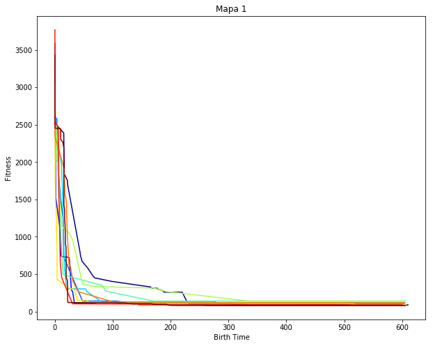
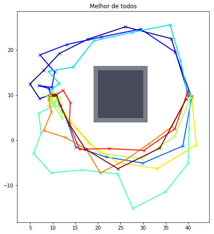
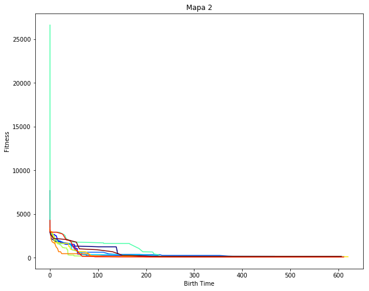
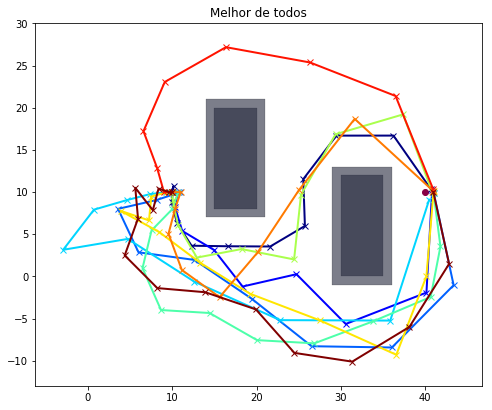
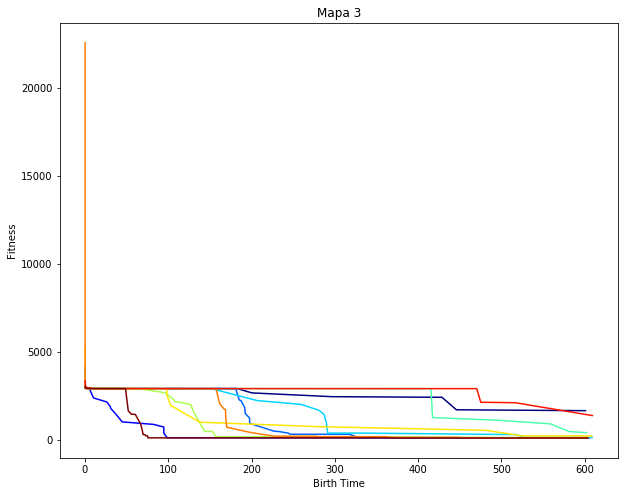
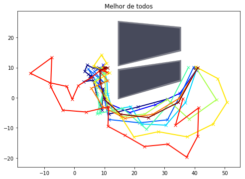
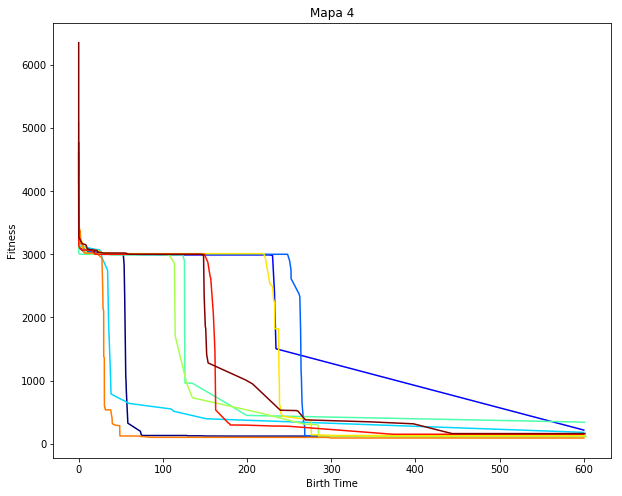
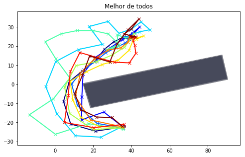

Resultados da Alocação de Risco
eixo x: tempo em que foi encontrada a melhor solução (em segundos)
eixo y: fitness do melhor de todos
--------------------------------------------------------------------------------


--------------------------------------------------------------------------------


--------------------------------------------------------------------------------


--------------------------------------------------------------------------------

